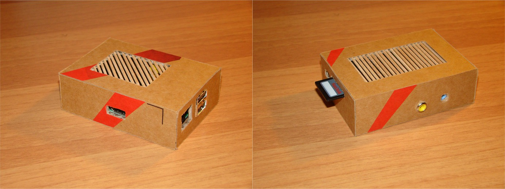

I bought a Raspberry Pi. No need to explain this since nowadays everybody buys a Raspberry Pi. Even if I don’t use it, large part of its (not too high) price goes for charity, I figured.
I was reluctant to buy a casing for it in the shop, because I wanted to build it myself. There are tons of interesting RPi case projects out there, but I found Jude Pullen‘s the most interesting. I followed his instructions and the result is a very cool Raspberry Pi case out of cardboard. In fact, I recycled the packaging of my new ThinkPad.
I didn’t do the light-pipes. I’m not sure if this is the Pi’s final casing and I didn’t want to glue anything onto the board itself. In summary, working with cardboard is easy, fun and kept me away from the computer for some nights. I may build a better version (with light pipes), or even something completely different in the future.